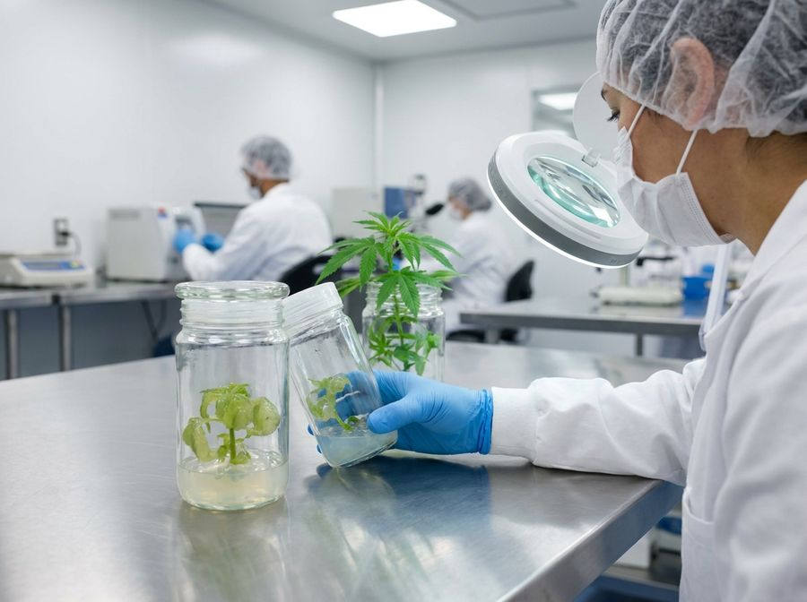

Cleaning up cannabis genetics with tissue culture
Tissue culture grows a clean, vigorous, genetically identical mother from a speck of tissue off a tired or diseased plant. Explained from absolute zero.
What this guide is, and what you'll achieve
This guide takes you from picking a donor plant to holding a clean, rooted, hardened young mother in your hands. You will learn what plant tissue culture is, why cannabis growers use it to “clean up” their genetics, and exactly how to run the whole process yourself.
This is written for someone who has never set foot in a lab. Every term is defined the first time it appears. Nothing is assumed. Where the science is genuinely uncertain or a product hides its details, this guide says so plainly.
Tissue culture regrows an entire plant from a microscopic piece of its growing tip. That tip is too young to carry most diseases, so the new plant comes out clean even if its parent was sick.
How to use this document
Cannabis is a recalcitrant species: it fights back in the jar. Losing most of your first batch to contamination or browning is normal, not failure. Published labs report anywhere from ~55% of pieces surviving down to 90–95% losses at the very first stage. Treat your first run as a training run.
Tissue culture in plain English
Tissue culture rests on one fact about plants that animals do not share. Almost every cell holds the full instructions to rebuild the whole plant.
Almost every living plant cell carries the complete instructions to rebuild the whole plant. Give a tiny scrap of the right tissue the right food and the right hormones and it grows roots, shoots and leaves: a complete new plant. This ability is called totipotency. You are not growing a ‘sample’, you are growing a whole new copy.
Here is the vocabulary you need. Get the gist rather than memorising it. Each term comes back in context later.
| Term | What it actually means |
|---|---|
| Tissue culture (TC) | Growing plant cells, tissues or organs in a sterile container on a jelly-like food, instead of in soil. |
| Micropropagation | Using tissue culture specifically to multiply a plant, making many identical copies. The two words are used interchangeably here. |
| In vitro | Latin for ‘in glass’. Anything happening inside the sterile jar. Its opposite is ex vitro / in vivo: out in the real world. |
| Explant | The small piece of plant you cut off and put into the jar to start a culture. Your seed crystal. |
| Clone | A genetically identical copy. Every plant from one mother by TC (or by cutting) is a clone. |
| Aseptic / sterile technique | Working so that no bacteria, fungi or yeast get into your culture. The single skill that decides success. |
| Medium (plural: media) | The food. A jelly of mineral salts, sugar, vitamins and hormones, set firm with a gelling agent. ‘Pouring media’ = filling jars with it. |
| PGR (plant growth regulator) | A plant hormone added to the medium to steer growth. One type makes shoots, another makes roots. Also just called ‘hormones’. |
| Meristem | The dome of forever-young, dividing cells at the very tip of every shoot. The cleanest tissue on the plant, and the hero of this whole guide. |
| Node | The point on a stem where a leaf and a bud join. A nodal segment is a short stem piece containing one bud. |
| Subculture | Moving growing tissue onto fresh medium. You repeat this every few weeks to keep cultures alive and multiplying. |
| Contamination | The enemy: any microbe that invades the jar and outcompetes your plant. Almost always fatal to that culture. |
| Indexing | Lab-testing a plant to confirm it is free of a specific disease (e.g. a DNA test for a viroid). ‘Proving clean.’ |
It does not mean editing or improving the DNA. The strain stays exactly the same strain. It means stripping away the diseases and pests the plant has picked up over years of cloning, so the original genetics can finally perform the way they were bred to. It is a factory reset on plant health, not a genetic upgrade.

Why clean up genetics? Meet Hop Latent Viroid
Take cuttings from the same mother for years and two things creep in: invisible diseases that spread cutting-to-cutting, and the slow accumulation of damage. The plant looks fine, then yields quietly drop, buds get smaller, smell fades. The number-one culprit in cannabis has a name.
Why HpLVd is such a big deal
No spray cures a viroid-infected plant. It lives inside the plant's cells and plumbing. The only reliable way to get rid of it is to grow a brand-new plant from a piece of tissue the viroid hasn't reached yet. That is precisely what meristem tissue culture does, and it is the heart of this guide.
HpLVd gets the headlines, but a clean start also leaves behind fungal root-rots (Fusarium, Pythium), grey mould (Botrytis), powdery mildew, various viruses, and even hitch-hiking pests like russet and broad mites and their eggs. You begin clean at the cellular level instead of fire-fighting forever.
The whole journey at a glance
Every plant tissue culture workflow follows the same five classic stages, whether for orchids, bananas or cannabis. They were first laid out by a scientist named Murashige. Learn this skeleton and everything that follows hangs neatly on it.
This guide breaks those five stages into the practical steps you'll actually perform. That includes the two cannabis-specific extras: the meristem cleanup that removes the viroid, and the indexing test that proves it worked.
How long does the whole thing take?
Longer than you'd hope, and that's worth knowing up front. There are two honest answers, depending on what you mean by ‘done’.
- A clean, rooted, hardened clone (no lab proof of disease status): roughly 10–15 weeks.
- A confirmed HpLVd-free mother (meristem culture + DNA testing): realistically 5–6 months or more. It is not a two-week job.
Why a meristem tip beats the disease
This is the single most important concept in the whole guide. Once it clicks, everything about ‘cleaning genetics’ makes sense.
Viroids and viruses move around a plant through its vascular system: the internal plumbing (phloem) that carries sap. They spread cell-to-cell from there. But at the very tip of every growing shoot sits the meristem, a dome of furiously dividing baby cells that is so new the plumbing hasn't been built into it yet.
- No plumbing yet. The vascular tissue that carries the viroid hasn't differentiated in the dome, so the pathogen has no road in.
- The cells outrun it. Meristem cells divide faster than the viroid can copy itself and creep forward, so the newest tip cells stay ahead of the infection.
Which piece you cut decides whether you merely clone the plant or actually clean it. There is a direct trade-off: the smaller and younger the piece, the cleaner it is, and the harder it is to keep alive.
Meristem culture can produce a viroid-free plant. It does not make a viroid-resistant one. A cleaned plant can be re-infected the moment a dirty blade or hand touches it. Clean stock only stays clean with disciplined hygiene afterwards, and it's only truly ‘clean’ once a lab test says so (section 13).
Your lab and your kit
You do not need a white-coat laboratory. You need a small pocket of genuinely clean air to work in, a way to sterilise things with heat, and somewhere lit and warm to keep the jars. Here is the whole picture.
Clean air: still-air box vs flow hood
A clear plastic storage tub on its side with two arm-holes cut in the front, wiped down with alcohol. With all fans and AC off, the air inside goes dead still so spores can't drift onto your open jars. Cheap to free, and the recommended place to start. Downside: cramped, and moving your arms stirs the air.
A powered cabinet that blows HEPA-filtered air (removing >99% of particles) in one smooth sheet across your work, constantly washing contaminants away. Roomier, faster, far more forgiving. The upgrade, not a requirement. This is what comes in the Athena kit.
Those exist to protect the operator from dangerous germs. In plant TC you only need to protect the plant from germs, so a flow hood (or a still-air box) is exactly the right tool. A biosafety cabinet is expensive overkill.
The Athena Culture Kit, honestly assessed
Athena Ag (the company behind the popular ‘Pro Line’ nutrients) sells an all-in-one benchtop tissue culture kit aimed squarely at growers with no lab experience. It bundles the awkward, expensive bits into one toolbox.[12]
What's confirmed to be in the box:
- A portable laminar flow hood (True HEPA H13 filter, airflow 0.5–0.9 m/s, ~2.58 ft³ work zone).
- A small one-touch autoclave (pressure steriliser) for media and tools.
- A toolbox with scalpel, forceps and the step-by-step procedure printed inside the lid.
- Two pre-mixed, ‘just add water’ media: SHOOTS (blue; multiplies shoots) and ROOTS (callus and root development / new mothers).
- Cleanse (a plant-safe hypochlorous-acid sanitiser) and bleach as the surface sterilants.
- Enough to make up to ~120 culture vessels out of the box; media, vessels and filters are bought as refills.
- The media base is secret. Athena won't say whether ROOTS/SHOOTS are built on MS, DKW or a custom blend, nor which hormones, at what doses. You can't tune or troubleshoot what you can't see.
- No disease test. The kit does the meristem cut but ships no DNA test (qPCR) and no thermotherapy gear. So it cannot, by itself, prove a plant is HpLVd-free. Budget for independent lab testing (section 13).
- Price moves around: roughly $1,800–$2,295 depending on where and when; refills (media $30–$40/box, vessels $15 each, HEPA $100) add up over time.
A DIY equivalent (still-air box, a $60 pressure cooker as the autoclave, generic MS media powder, agar, bleach) runs roughly $200–$550 to start. The kit buys convenience and a real flow hood, not a different outcome. Where this guide gives a recipe, it gives both the DIY version and the Athena-sachet version.
Aseptic technique: the skill that decides everything
Learn this one thing well above all others. Ninety percent of beginner failures are contamination, and contamination is a technique problem, not a luck problem.
‘Aseptic’ means working so that no stray microbe lands in your jar. Microbes are everywhere: on your skin, in your breath, drifting in the air, on every surface. Your medium is a sugary jelly they would love to eat. Your job is to be the bouncer.
The four enemies, and how to recognise them
The aseptic workflow, every single time
- 1Clean the zoneWipe the box/hood interior and the bench with 70% alcohol. Let it flash off. Turn off fans/AC if using a still-air box.
- 2Glove and sprayFresh nitrile gloves, then spray your gloved hands with 70% alcohol. Re-spray often, every time you touch anything outside the sterile field.
- 3Only what you needBring in only the jars, tools and explants for this session. Clutter is contamination.
- 4Sterilise tools before EVERY cutDip the scalpel and forceps in alcohol then pass through a flame, OR use a glass-bead steriliser (~250 °C, ~20 seconds). Then let them cool: touching tissue with a hot tool cooks it.
- 5Work fast, lids off brieflyOpen a jar only at the moment you use it; close it the instant you're done. Never leave a vessel gaping.
- 6Hands never cross open jarsReaching over an open vessel showers it with skin flakes and spores. Approach from the side, always.
If you dip tools in alcohol and flame them, keep the open alcohol container well away from the flame and never flame directly over it. A glass-bead steriliser removes the open-flame risk entirely and is the safer choice in a plastic still-air box.
After pouring fresh media, or after starting new cultures, leave them in the culture room for about 7 days before you trust them or commit more material. Any contamination, especially the slow latent kind, will reveal itself. It is far cheaper to lose one jar to the bin than a whole batch to a hidden microbe.
Making and sterilising the medium
The medium is the jelly your plant lives on. At its simplest it is mineral salts (plant food), sugar (energy, because a sealed jar is too dim for the plant to feed itself), vitamins, optional hormones, and a gelling agent to set it firm: all dissolved in pure water, pH-adjusted, then heat-sterilised.
A starter recipe (per 1 litre)
This is a solid, widely-used DIY initiation/multiplication medium. Make it once and you'll understand what's in every sachet you ever buy.
| Ingredient | Amount per litre | What it does |
|---|---|---|
| Distilled / RO water | start with ~800 mL | The solvent. Pure water only: tap minerals throw off the recipe. |
| MS basal salts | 4.4 g | The mineral nutrition (full strength). |
| Sucrose (sugar) | 30 g (3%) | Energy source. Plain table sugar works for hobby use. |
| Agar | 6–8 g | Gelling agent that sets the jelly. More agar = firmer gel = less hyperhydricity (section 14). |
| myo-Inositol | 0.1 g | A growth supplement / sugar-alcohol the cells use. |
| Activated charcoal | ~1 g (optional) | Soaks up the brown phenolics cannabis leaks, reducing browning. |
| Hormone (PGR) | see table below | Steers the tissue toward shoots or roots. Optional at initiation. |
| PPM (a biocide) | 1–2 mL (optional) | Extra insurance against microbes that survive sterilisation. |
| Top up water to | 1 L; pH to 5.6–5.8 | Set pH BEFORE adding agar and before sterilising. |
Dissolve salts and sugar in the water first, adjust the pH to 5.6–5.8 (nudge down with a drop of dilute acid, up with dilute base), then add the agar, then heat to dissolve the agar, then pour into jars (~⅓ full) and sterilise. pH set after the agar is in is much harder to do.
The hormone cheat-sheet (for DIY media)
Buy a kit and the hormones are already blended in, so you can skip this. Mix your own and this is the cannabis-specific shortlist.
| Stage | Hormone (PGR) | Typical dose | Notes |
|---|---|---|---|
| Initiation | meta-Topolin (mT) or TDZ | mT ~0.5 mg/L; TDZ 0.1–0.5 mg/L | A gentle cytokinin to wake the explant. TDZ is potent: keep it low, or it causes callus and glassy shoots. |
| Multiplication | meta-Topolin (mT) | 0 – ~0.5 µM | Less is more in cannabis. Hormone-free often gives the healthiest, most numerous shoots (see section 14). |
| Rooting | IBA (an auxin) | 2.5 µM (~0.5 mg/L) | The best rooting hormone for cannabis: roughly double the roots of IAA or NAA. |
Sterilising the medium
Raw medium is microbe heaven, so it must be heat-sterilised before use. The home tool is a pressure cooker; the lab tool is an autoclave (the Athena kit includes a small one). Both do the same job: hold the jars at 121 °C / 15 psi for ~20 minutes.
Plain MS+agar media keeps a few weeks to ~1–2 months refrigerated and dark. Media with PPM in it should be used within about 1 month. Make what you'll use.
Preparing the mother plant
Garbage in, garbage out. The health of your donor plant is the single biggest predictor of whether your cultures stay clean. A stressed, dusty, pest-ridden mother will defeat even perfect technique, because some microbes ride inside the tissue where bleach can't reach (the endophytes from section 7).
Pick your best, true-to-type plant and get it into peak vegetative health before you cut anything from it.
- Keep it vegetative, never flowering: long days, 18 h light / 6 h dark.
- Aim for 24–30 °C and a moderate 55–60% humidity.
- Feed a vegetative nutrient mix and keep it pushing soft, fast new growth. That young tissue gives far better, cleaner explants than old woody stems.
- Scout and treat pests and disease first. Only work from a plant that looks genuinely healthy.
- For the 1–2 weeks before cutting, keep humidity low and stop overhead watering. Dry foliage carries far fewer surface fungi and bacteria.
- Some growers apply a systemic fungicide drench/spray in those days to knock back the internal microbe load that surface sterilising can't touch.
- Take your explants from the upper, younger but fully-formed nodes of an actively growing shoot, not the floppy tip and not the woody base.
Taking and sterilising the explant
Now the hands-on work begins. You'll cut a small piece from the conditioned mother and surface-sterilise it, killing every microbe on its outside without killing the plant tissue itself. This is the dirtiest, most failure-prone step, so go slowly and follow the sequence exactly.
Cut the explant
For your first attempts, use a nodal segment: a piece of stem ~1 cm long containing one bud. It's the most forgiving explant and lets you learn sterile technique before attempting the fiddly meristem dissection (section 12). Strip off large leaves to reduce the surface area carrying microbes.
Surface-sterilise it
The standard, best-supported beginner protocol is a two-punch: a quick alcohol dip to break the waxy surface, then a bleach soak to kill everything, then thorough rinsing so no bleach remains to poison the tissue.
| Step | What to use | Time |
|---|---|---|
| 1. Pre-wash | Tap water + a drop of dish soap, gently agitated | 10–20 min |
| 2. Alcohol dip | 70% ethanol or isopropyl | 30–60 sec |
| 3. Bleach soak | 10% household bleach (1 part bleach : 9 parts water) + a few drops of Tween-20 / dish soap, swirling | 15–20 min |
| 4. Rinse ×3 | Sterile distilled water, fresh each time | 3 min each |
| 5. Re-trim | Cut off the bleach-damaged ends on a sterile surface | – |
| 6. Plate | Place onto initiation medium, seal the vessel | – |
Recipes quote bleach two different ways and people poison their tissue by confusing them. Household bleach is only ~5–8% sodium hypochlorite (NaOCl) to begin with. So a 10% dilution of household bleach gives only ~0.5–0.8% actual NaOCl, which is correct. If a paper says ‘1% NaOCl’ that's a stronger solution. Always check whether a number refers to diluted bleach or to active NaOCl before you mix.
Beyond ~30 minutes in bleach, cannabis tissue starts dying (one study saw ~75% tissue death by 45+ min). Under-sterilise and you get contamination; over-sterilise and you get a dead brown explant. 15–20 minutes is the beginner sweet spot. Adjust from there.
Initiation: waking the explant up
‘Initiation’ (also called establishment) is the period after you've placed the sterile explant on its medium, while it settles in and starts to grow. Your jobs here are to watch like a hawk for contamination and to keep the tissue from browning to death.
- Put the plated vessels in the culture room at ~25 °C, 16 h light / 8 h dark, gentle light.
- Watch for 7–14 days. Bin any vessel showing fungal fuzz, cloudy medium or slimy ooze immediately. One bad jar can seed the shelf.
- Expect the bud to swell and push new growth (‘bud break’) in roughly 2–3 weeks.
- Survivors that are clean and growing graduate to the multiplication stage.
Cut cannabis leaks phenolic compounds that oxidise and turn the tissue (and the medium around it) brown, sometimes fatally. Fight it with activated charcoal in the medium (~1 g/L), an antioxidant dip, and moving the explant to fresh medium early and often in the first couple of weeks.
Initiation is where recalcitrant cannabis sheds the most cultures. Published labs report anywhere from ~55% of explants surviving to 90–95% loss across varieties. Start more explants than you think you need, and don't be discouraged by a thin survival rate on run one.
Meristem dissection: the actual genetic clean-up
Everything so far also describes ordinary cloning. This is the step that removes the disease. Instead of a 1 cm node, you excise only the tiny meristem dome from section 5, the part the viroid hasn't reached, and grow your new plant from that.
- 1Sterilise a shoot tipSurface-sterilise an actively growing shoot tip exactly as in section 10.
- 2Go under the scopeUnder a stereo (dissecting) microscope, in the flow hood, use fine sterile needles/forceps to peel away the wrapping baby leaves until the glassy, translucent meristem dome is exposed.
- 3Cut the domeExcise just the dome plus 1–2 leaf primordia, a piece only 0.2–0.5 mm across. Place it on initiation medium.
- 4Be patientMeristems are slow and fragile. Expect ~10 weeks (sometimes up to ~24) to recover into a viable shoot, much slower than a node.
How well does it actually work?
Here is where honesty matters most. Meristem culture can clear HpLVd, but how often it succeeds depends enormously on the strain. In one 13-cultivar study using meristem culture plus mild heat treatment, the disease was fully eradicated in only 5 of 13 cultivars.[5]
- Thermotherapy, holding the mother or culture warm (~30–36 °C) for a couple of weeks, lowers viroid levels so you can excise a slightly larger, more survivable meristem that's still clean. On its own it's unreliable (levels rebound; heat can even create mutant viroids), so it's used with meristem excision, not instead.
- Cryotherapy (briefly freezing shoot tips in liquid nitrogen so only the tiny clean cells survive) is a powerful research method but has no standard, proven cannabis protocol yet. File under ‘advanced/future’.
The kit lets you do the meristem cut. It includes no heat-treatment hardware and no DNA test. So after this step you have a plant that is probably clean, not a proven clean one. That proof is the next section, and it's non-negotiable.
Indexing: proving it's actually clean
A meristem plant that looks healthy is not a clean plant until a lab test says so. ‘Indexing’ is that test. Skip it and you can spend six months building a ‘clean’ mother that quietly re-seeds your whole room with viroid.
- HpLVd spreads through a new plant unevenly and slowly. It reaches roots in ~2–3 weeks and foliage in ~4–6 weeks after infection.
- So test more than once, on more than one tissue. Roots are the most reliable early indicator; sample older and newer leaves too.
- Test the recovered plantlet, then re-test as it matures before you ever promote it to a production mother. A single early negative is not proof.
This is the line item the kit marketing skips. Independent HpLVd testing is the difference between hope and proof. Factor a few lab tests per candidate mother into your plan. It's cheap compared to losing a crop.
Multiplication, and the hyperhydricity trap
Once you have a clean, established shoot, multiplication turns one into many. You move it onto a cytokinin (shoot-pushing) medium; it produces several shoots; you cut those apart and move them onto fresh medium; repeat. Each round is a subculture, roughly every 4 weeks.
You'd expect more cytokinin to mean more shoots. In cannabis, several studies found the most shoots, and the healthiest ones, on hormone-free medium, with added cytokinin actually reducing shoot count and causing glassy, deformed growth. Start low or zero, and only add hormone if you genuinely need a higher rate. (With the Athena SHOOTS sachet the hormones are pre-set and you can't change them.)
Hyperhydricity: the disorder that ruins multiplication
It's caused by too much humidity in the vessel, too much cytokinin, soft watery gel, and poor air exchange. The fixes are straightforward once you know to look.
- Use meta-topolin instead of older BAP, and keep cytokinin low or zero.
- Firm up the gel. More agar (toward 9.5 g/L) makes a drier medium the shoots like better.
- Ventilate the vessels (vented lids / gas-permeable closures) to let humidity and ethylene escape.
- Subculture on schedule (~4 weeks) so hormones and gases don't build up.
Don't subculture forever: the 5-cycle rule
Every time you subculture, a few tiny DNA copying errors (mutations) sneak in. Recent cannabis research showed these accumulate in direct proportion to the number of subcultures, a near-straight-line relationship. Push it too far and your ‘identical’ clones quietly drift away from the original.[9]
Aim to use a culture line for about 5 subcultures, then start again from a freshly cleaned explant or cryo-stored stock. This keeps your clones genuinely true-to-type.
Rooting: turning a shoot into a plant
A multiplied shoot has no roots. Rooting fixes that with an auxin (the root-pushing hormone family). There are two routes; both work, and the second is simpler for beginners.
Move shoots onto a sterile rooting medium: half-strength MS + 3% sugar + IBA ~2.5 µM (~0.5 mg/L) + a pinch of activated charcoal. Roots appear by about week 3. The most-cited cannabis result: ~95% rooting, ~5 roots per shoot.[7]
Take the shoot straight out of the jar, dip the cut end in a rooting gel (e.g. ~1,000–3,000 ppm IBA), and stick it into a moist rockwool cube under a humidity dome. Rooting and hardening happen together, outside the jar. Commercially preferred: better roots, higher survival, one less sterile step.[8]
- IBA is the best auxin for cannabis, roughly double the roots of IAA or NAA.
- Rooting substrate ranking: rockwool > peat > coco (rockwool's air-to-water balance and sterility win clearly).
- Harvest shoots for rooting from younger cultures (6–12 weeks old). Rooting success drops sharply from older, tired cultures.
- Expect roots in 2–4 weeks in vitro; 7–10 days for ex-vitro cuttings under a dome.
Athena's ROOTS medium is their pre-mixed version of a rooting/callus medium, hormones already blended. Same idea as Route A, no measuring. As always, you can't see or tune what's in it.
Acclimatisation: weaning the plantlet to the real world
This is the most heartbreaking stage to rush. A plantlet raised in a sealed jar has been living in a tropical paradise: ~100% humidity, constant warmth, sugar fed to it, dim light. Its leaves never bothered to grow a proper waxy skin or working pores. Throw it straight into room air and it wilts and dies in hours.
- 1Pot upMove the rooted plantlet into a clean, sterile substrate, either rockwool or a peat:perlite (1:2) mix, in a small pot or plug.
- 2Dome on, high humidityCover with a humidity dome / propagator at ~75–80% humidity. Keep light low at first (~50 µmol/m²/s). Water gently.
- 3Step humidity downOver ~2–3 weeks, open the vents a little more each day, taking humidity down toward ~55–65%. Watch for wilting and back off if needed.
- 4Ramp light upAs humidity falls, raise light toward ~500 µmol/m²/s, roughly a tenfold increase, to build a sturdy plant.
- 5Dome offOnce it's holding turgor in open air and pushing new growth, remove the dome. It's now a normal young plant.
- Desiccation: humidity dropped too fast, so the plant can't close its pores in time and dries out. (The #1 cause; go slow.)
- Hyperhydricity hangover: glassy shoots from a too-humid multiplication stage simply never harden. Fix it upstream (section 14).
- Damping-off: fungal rot in the warm, wet substrate. Use sterile substrate and don't overwater.
Well-run protocols report 90–100% survival through hardening. Those are best-case lab numbers and your first run will likely be lower, but they show that patient, gradual weaning genuinely works.[6]
Re-establishing the clean mother
You've arrived. The hardened plantlet, ideally one you've had lab-tested clean, is now grown on into a full mother (stock) plant, and from her you take normal cuttings the easy old-fashioned way, at scale.
- 1Grow her upPot on and veg the clean plantlet under long days (18–24 h light) in a controlled, scrupulously clean space, ideally isolated from your old, possibly-infected plants.
- 2Verify clean (again)Re-test for HpLVd as she matures, before you rely on her. Only a tested-negative plant earns the title ‘clean mother’.
- 3Take cuttings / retipsFrom the established mother, take ordinary stem cuttings or soft apical ‘retips’. Cannabis retips root at 76–81% with no hormone and >90% with IBA at ~1,000 ppm: an easy way to bulk up clean stock fast.
- 4Keep her cleanDedicated, sanitised tools; sanitise hands and surfaces between plants; never let an untested plant near her. Clean stock stays clean only through discipline.
Research confirms tissue-cultured mothers are chemically faithful: cannabinoid content of plants from micropropagation, retips and ordinary cuttings was the same. TC doesn't change your strain, it just hands it back to you healthy.
Storing genetics: synthetic seed & cryo (the cutting edge)
Once you can clean and multiply a strain, you can also bank it, preserving a clean genotype so you never have to re-clean it. Two methods are worth knowing, even as a beginner, because they're where the field is heading.
A shoot tip or bud encapsulated in a soft bead of calcium alginate gel: an ‘artificial seed’ you can store and ship. Proven at commercial scale in cannabis: encapsulated ‘Slurricane’ buds showed 100% regrowth after 150 days of storage. Good for short-to-medium-term keeping and posting genetics.
Freezing tiny shoot tips in liquid nitrogen (−196 °C) for indefinite storage. It's the gold standard for long-term germplasm banking, and it neatly ‘resets the clock’ on the subculture mutations from section 14. Real but advanced; cannabis protocols recover ~55–63% of tips.[11]
Commercial clean-stock labs (Conception Nurseries, Front Range Biosciences and others) chain all of this together: test → meristem-clean → micropropagate → verify true-to-type → keep elite mothers with a frozen backup → ship clones or synthetic seed. The largest runs over 500,000 plants a month. You're doing the same pipeline in miniature.[10]
Cannabis has long been ‘recalcitrant’, with regeneration only working on a few strains. A 2025 protocol using cotyledonary-node explants reported ~70–90% success across many hemp and medicinal lines, a real step toward methods that work on any genetics. The science here is still moving fast.
Troubleshooting
Nearly every beginner problem is on this list. Match the symptom, apply the fix, keep notes.
| Symptom | Likely cause | What to do |
|---|---|---|
| Cloudy medium / slimy ooze at the base, sour smell | Bacterial contamination (often endophytic, from inside the mother) | Discard the vessel. Improve mother health & pre-conditioning; consider PPM in medium; tighten aseptic technique. |
| Fuzzy white/coloured growth spreading on the medium | Fungal contamination (airborne spores) | Discard immediately before it spreads. It's an air/technique issue: check your clean-air setup and tool sterilising. |
| Everything looked fine for 2 weeks, then crashed | Latent endophyte erupting on rich medium | This is why you wait & watch. Start from healthier, pre-treated mother tissue; use smaller/younger explants. |
| Explant turns brown and dies | Phenolic oxidation (browning) | Add activated charcoal (~1 g/L); antioxidant dip; subculture to fresh medium early and often. |
| Shoots glassy, swollen, water-soaked, brittle | Hyperhydricity / vitrification | Lower/remove cytokinin; firmer gel (more agar); ventilate vessels; subculture on schedule. |
| Few or no new shoots in multiplication | Too much hormone, or wrong genotype response | Try hormone-free or lower cytokinin; accept that rate is strain-dependent. |
| Shoots won't root | Wrong/insufficient auxin, or culture too old | Use IBA ~2.5 µM; harvest shoots from younger (6–12 wk) cultures; try ex-vitro dip-and-plant. |
| Plantlets wilt & die when moved to soil | Acclimatisation too fast (desiccation) | Step humidity down slower over 2–3 weeks; keep the dome on longer; ensure good roots first. |
| Cleaned plant tests positive for HpLVd anyway | Meristem too large, or strain hard to clean | Cut a smaller dome; clean several meristems per strain; consider thermotherapy adjunct; always re-index. |
| Clones drifting from the original over time | Too many subcultures (mutation build-up) | Reset from fresh/cryo stock by ~5 subcultures. |
The honest reality check: cost, success, and limits
So you can decide with eyes open.
What success rates to actually expect
| Stage | Best-case lab | Realistic beginner first runs |
|---|---|---|
| Initiation survival | up to ~55% usable | often much lower; 90–95% loss is reported and normal |
| Rooting | 95–100% | lower, improving with practice |
| Acclimatisation survival | 90–100% | lower on first attempts |
| HpLVd clearance (per strain) | 0–100% (avg ~40%) | strongly strain-dependent; clean & test several |
What it costs
| Path | Up-front | Ongoing |
|---|---|---|
| DIY starter (still-air box + pressure cooker) | ~$200–$550 | media powder, bleach, agar, gel; cheap |
| Serious home lab | under ~$1,000 | consumables + optional flow hood later |
| Athena Culture Kit | ~$1,800–$2,295 | media $30–$40/box, vessels $15 ea, HEPA $100 |
| HpLVd lab testing (essential) | per-sample fee | several tests per candidate mother: budget for it |
- Free ≠ resistant. A cleaned plant can be re-infected instantly by a dirty tool or hand. Hygiene is forever.
- A kit can clean but can't prove. No qPCR test in the box = no proof of ‘clean’. Independent lab testing is mandatory, not optional.
- It's strain-dependent and slow. Some genetics barely clear; a verified clean mother is a multi-month project.
- Proprietary media is a black box. Pre-mixed kits trade tunability and troubleshooting insight for convenience: fine for many, limiting if you want to optimise.
Tissue culture is the only reliable way to strip Hop Latent Viroid and other diseases out of a cannabis line and get your genetics performing like they should. It is learnable at home, a kit makes it convenient, and the biology genuinely works, provided you respect aseptic technique, go slow on hardening, and prove your results with a lab test rather than taking ‘it looks healthy’ on faith.
References
- Atallah OO et al. (2023). Hop latent viroid: a hidden threat to the cannabis industry. Viruses / PMC. https://pmc.ncbi.nlm.nih.gov/articles/PMC10053334/
- Transmission, spread, longevity and management of hop latent viroid in cannabis in North America (2025). PMC. https://pmc.ncbi.nlm.nih.gov/articles/PMC11902214/
- Holmes JE et al. (2021). Variables affecting shoot growth and plantlet recovery in tissue cultures of drug-type Cannabis sativa L. Frontiers in Plant Science, 12:732344. https://pmc.ncbi.nlm.nih.gov/articles/PMC8491305/
- Adhikary D et al. (2024). Importance of media composition and explant type in Cannabis sativa tissue culture. Plants (MDPI). https://pmc.ncbi.nlm.nih.gov/articles/PMC11434680/
- Differential gene expression after HpLVd eradication therapy in micropropagation tissue culture (2024–25). bioRxiv / Plant Cell Tiss. Organ Cult. https://www.biorxiv.org/content/10.1101/2024.04.06.588422v1
- Page SRG et al. (2019). Back to the roots: protocol for the photoautotrophic micropropagation of medicinal Cannabis. Plant Methods, 15:54. https://pmc.ncbi.nlm.nih.gov/articles/PMC6660493/
- Mestinšek Mubi Š et al. (2022). An alternative in vitro propagation protocol of Cannabis sativa L. presenting efficient rooting, for commercial production. Plants. https://pmc.ncbi.nlm.nih.gov/articles/PMC9146626/
- Kurtz LE et al. (2022). Ex vitro rooting of Cannabis sativa microcuttings and their performance compared to retip and stem cuttings. HortScience, 57(12):1576. https://journals.ashs.org/hortsci/view/journals/hortsci/57/12/article-p1576.xml
- Torkamaneh D et al. (2024). Somatic mutation accumulation in micropropagated cannabis is proportional to the number of subcultures. Plants, 13(14):1910. https://pmc.ncbi.nlm.nih.gov/articles/PMC11279941/
- A temporary immersion system to improve Cannabis sativa micropropagation (2022). Frontiers in Plant Science. https://www.frontiersin.org/articles/10.3389/fpls.2022.895971/full
- Cryopreservation of shoot tips of elite cultivars of Cannabis sativa L. by droplet vitrification (2019). Medical Cannabis and Cannabinoids (Karger). https://pmc.ncbi.nlm.nih.gov/articles/PMC8489323/
- Athena Ag, Culture Kit, ROOTS/SHOOTS media, and Plant/Media/Lab Prep procedure (manufacturer documentation). (non-peer-reviewed source) https://www.athenaag.com/culture-kit
Citations marked in-text as [n] map to this list. Peer-reviewed sources except where noted. Cannabis tissue culture is strongly genotype-dependent, verify dilutions, hormone doses and local regulations against the primary sources before relying on them.